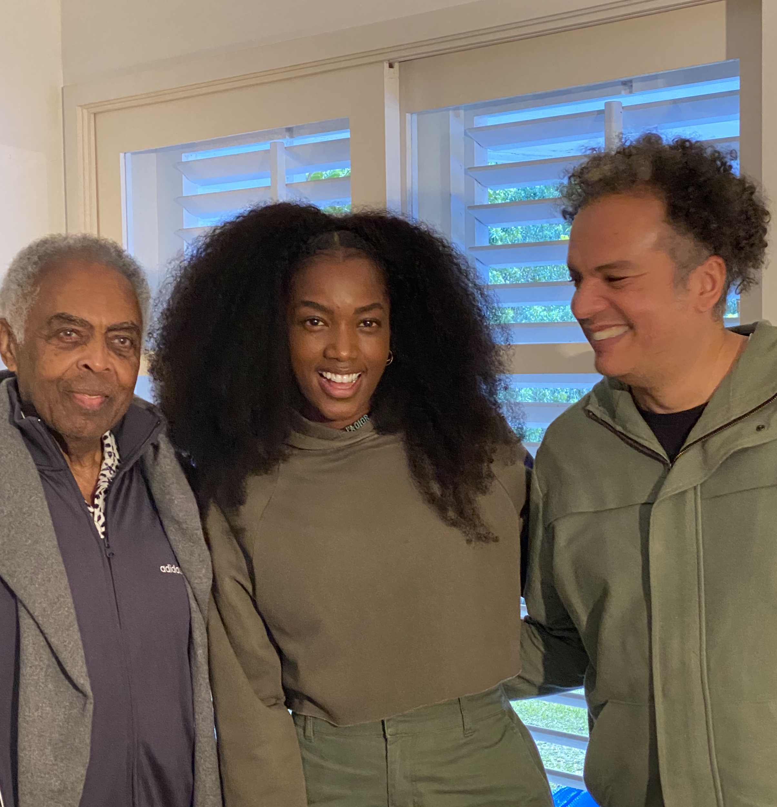
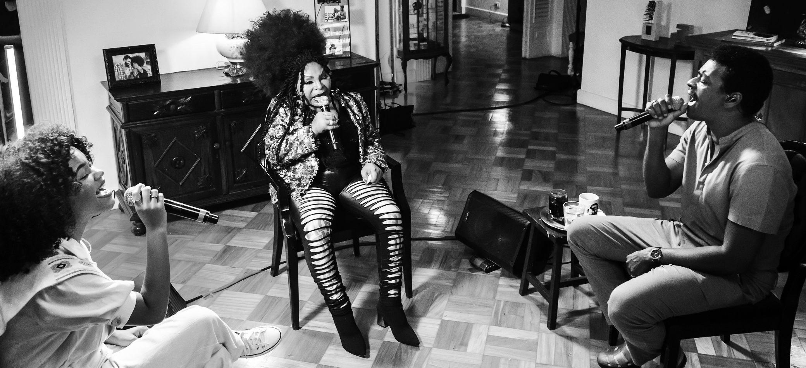
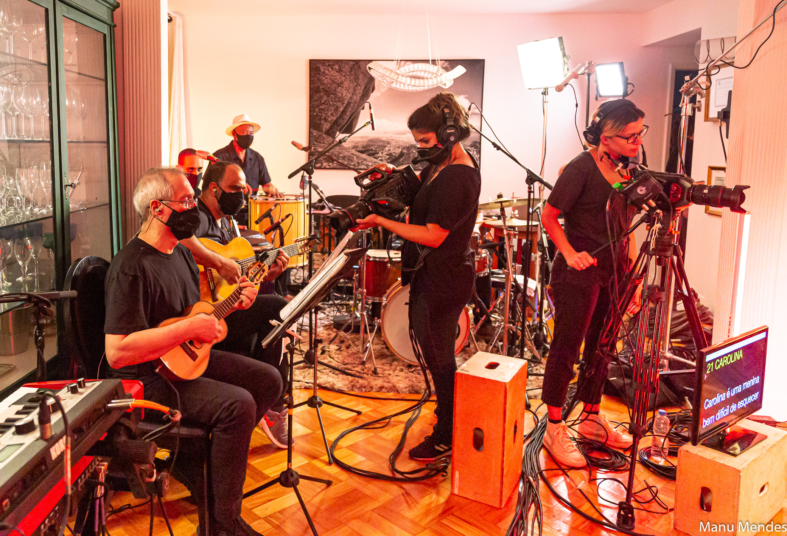

Gilberto Gil
e Iza - Live
Zé Ricardo recebeu de Tom Gil, diretor de negócios da W/McCann, o desafio de criar para a Mastercard um encontro que não tivesse preço. Assim nasceu a Live “AS CANÇÕES DE GILBERTO GIL POR IZA E GIL”. Pudemos ouvir canções belíssimas de um dos maiores compositores do mundo, ícone da nossa MPB, na voz de Iza. Acompanhada por Gil ao violão e José Gil na percussão Iza passeou por uma hora na obra de Gil. Com uma fotografia delicada e excelente qualidade de som, o encontro que emocionou e teve uma repercussão imensa na imprensa. A LEVE assina a realização e produção geral desse show. Contratando além dos artistas, todos os fornecedores envolvidos no projeto. Essa Live foi o lançamento de uma campanha da Mastercard que arrecadou dois milhões de pratos de comida para a ONG Rio Solidário.





Milton,
Xenia e Liniker
- Live
A segunda Live da série Mastercard reuniu um dos principais gênios da MPB com dois grandes talentos da nova geração. Na Live “MILTON NASCIMENTO POR MILTON, XÊNIA E LINIKER”, a obra de Milton foi revisitada em interpretações emocionantes. Seus principais clássicos ganharam um novo olhar com as interpretações de Xênia França e de Liniker. A combinação das vozes dos três fez o publico em casa participar ativamente da live através do QR code e promoveu uma arrecadação para a campanha da Mastercard “Faça parte e comece o que não tem preço” que arrecadou dois milhões de pratos de comida para a ONG Rio Solidário. A LEVE assina a realização e produção geral desse show. Contratando além dos artistas, todos os fornecedores envolvidos no projeto.


Elza
Seu Jorge
e Agnes - Live

A série de Lives da Mastercard seguiu mexendo com o mercado da música propondo um novo olhar para o formato. Para a última edição dessa trilogia, apresentamos um poderoso encontro de gerações. A Live “CLÁSSICOS DO SAMBA”. A rainha Elza Soares fez com Seu Jorge, e Agnes Nunes um dos encontros mais incríveis de 2020. Os três passearam por uma hora num repertório de sambas que marcaram suas vidas. Um encontro que emocionou do início ao fim. A LEVE assina a realização e produção geral desse show. Contratando além dos artistas, todos os fornecedores envolvidos no projeto.


